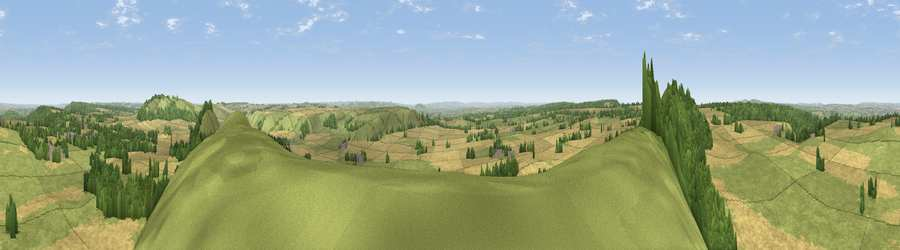

Viewpoint near Maiden Bradley
#6092 in England · top 6% of its area beats it · near Maiden BradleyThe view, rendered

A 360° render of this exact spot computed from the terrain model, tree cover and land cover — summer colours, afternoon light, calibrated against photographs of famous viewpoints. Real trees, hedges and buildings will differ in detail.
The panorama
Grey silhouette: terrain skyline in each direction (720 bearings, Earth curvature and refraction included). Dashed green: skyline with trees (+15 m) and buildings (+8 m) as obstacles. Blue strip: how far the ground is visible on each bearing.
Where the view opens
Wedge length = distance to the farthest visible ground on that bearing (vegetation-aware). Rings at 10, 25 and 50 km.
What fills the view
51% grassland · 38% cropland · 10% woodland ·
Angular shares of the visible panorama (visual magnitude), not map area. Landscape diversity 0.42 (0–1 Shannon).
Key numbers
More beautiful places nearby
The staircase of upgrades: each row has a higher view potential than everything closer. Driving times are estimates from straight-line distance, calibrated against real road routing — check an actual route before setting out.
| Place | Direction | Drive | Score |
|---|---|---|---|
| Long Knoll | W · 1 km | ~2 min | 74.6 |
| Cley Hill | NNE · 8 km | ~17 min | 76.8 |
| Viewpoint near Lamyatt | W · 13 km | ~24 min | 77.8 |
| Viewpoint near Berwick St John | SE · 21 km | ~36 min | 78.2 |
| Beacon Batch | WNW · 37 km | ~55 min | 79.4 |
| Bleadon Hill [Loxton Hill] | WNW · 47 km | ~68 min | 79.6 |
| Viewpoint near Askerswell | SSW · 50 km | ~71 min | 81.7 |
| Lewesdon Hill | SW · 51 km | ~72 min | 83.3 |
51.13797, -2.29546 · source: screening · position refined by local search. Computed location — check access rights before visiting.